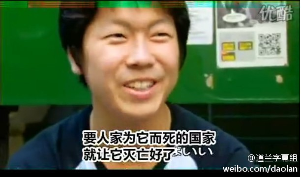
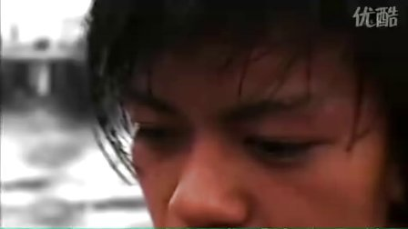

还真是看完了这个短篇，明显的感觉到了把自己描绘成战争受害者的味道，仿佛第二次世界大战不是它发起的。 //@王风风风: 这基本上有点盲目了。。。这话在MD播出来肯定被人骂死。太不政治正确了。//@菲菲狐狸糊涂: 要人家为它而死的国家，就让它灭亡好了——说这话的人未必值得尊重，但能播出这话的媒体@道兰字幕组:“要人家为它而死的国家，就让它灭亡好了。”日本最大的电视台NHK电视台在全国放映的战争证言征集广告中，里面有一个小伙子这么说道，从第2分钟开始看：kinuk的优酷视频  3848次播放 03:00
幸亏电不是日本人发明的，否则这位老兄该找深山老林去了吧，要是弄不好火也是日本人发明的……@黄健翔:卡拉ok是20世纪最重要也最赚钱的发明之一，尤其是狠赚热爱唱歌的我中国人民的钱。卡拉ok是日本人发明的。所以我决定即日起拒绝所有唱K局，无论是去夜总会还是量贩式，直到日本政府承认钧鱼岛是中国的为止。当然，我不反对别人继续唱K,更不敢去砸人家夜总会或量贩式KTV,因为我打不过人家的保安。
 kinuk的优酷视频
kinuk的优酷视频